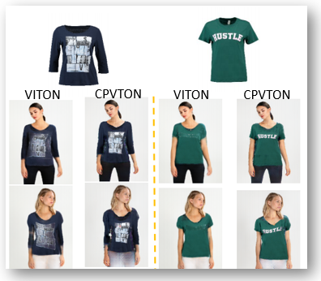
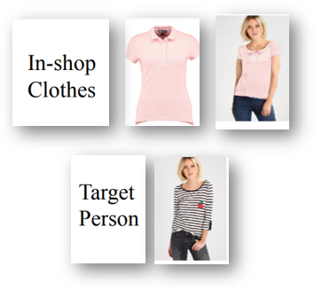
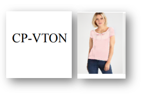
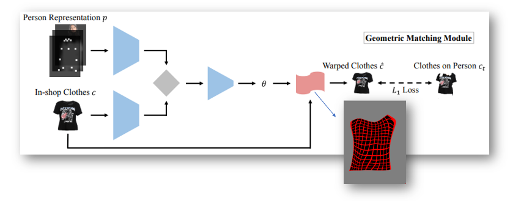
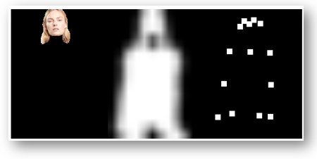
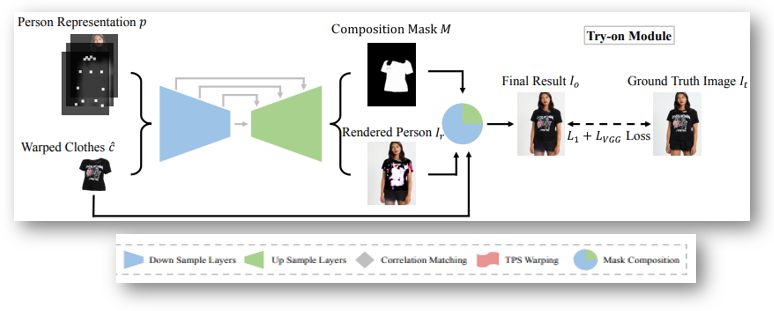

Team Members: Vaibhav, Prakhar, Anirudha, Pratyush
Our problem statement: Despite the convenience online fashion shopping provides, people are concerned about how a particular fashion item in an image would look on them. Thus, allowing consumers to virtually try on clothes will not only enhance their shopping experience, transforming the way people shop for clothes, but also save cost for retailers.
Our goal: To build an ML model Image-based virtual try-on systems for fitting a new in-shop cloth into a person image using the ideas/help of previous research papers. Our main focus will be on Shirts, T-shirts or any upper-wear of men or women.
Which research papers are we reffering to? How better it is from the previous researches?
Research paper reference
Many research papers have been published in the last 3-4 years. Many of them were able to solve the issue but 95% of them were not able to preserve the characterstics of clothes like Collar shape, Hand posture, Buttons, Printed designs etc
The research paper on VITON was able to build a successful model but wasn't able to preserve the small characterstics. Thus, we use CPVTON model for getting apprecible results in the same.

An implicit assumption taken into account while we prepare the ML model: In the image-to-image translation tasks, the input and output are roughly aligned with each other and they represent the same underlying structure
Input Datasets
Training Dataset: 14221; Validation on: 2032

Output from ML Model
Property of Image: Fixed resolution 256×192
/>
An overview of our CP-VTON
It contains 2 main modules, namely: a) Geometric Matching Module and b) Try-On Module
Geometric Matching Module (GMM):
The in-shop clothes c and input image representation p are aligned, via a learnable matching module ,for transforming the clothes into fitting the body shape of the target person

Major details of GMM
Person Representation (p):
Pose heatmap: A 18-channel feature map with each channel corresponding to one human pose keypoint, drawn as an 11 × 11 white rectangle. Body shape: A 1-channel feature map of a blurred binary mask that roughly covering different parts of human body. Reserved regions: A RGB image that contains the reserved regions to maintain the identity of a person, including face and hair
Thin Plate Spline (TPS):
A convolutional neural network(CNN) designed to estimate a TPS transformation between in-shop clothes and the target image without any explicit correspondences of interest points

GMM consists of four parts
(1) Two networks for extracting high-level features of p and c respectively. (2) A correlation layer to combine two features into a single tensor as input to the regressor network. (3) The regression network for predicting the spatial transformation parameters θ. (4) A Thin-Plate Spline (TPS) transformation module T for warping an image into the output c^ = Tθ(c).
Try-On Module:
Its purpose is to improve the boundary artifacts of warped clothes. It generates a composition mask M and a rendered person Ir. The final results Io is composed by warped clothes cˆ and the rendered person Ir with the composition mask M

Our Work Plan
Phase I: a) We plan to do a deep dive study of Deep Learning models involving CNN, GANs, U-net (Up-sampling + Down-sampling). These are the not easy to understand pre-requisite parts of this project upon which the main module is based on.
b) Along with that we are trying to work on Input datasets which we will have to web scrape from numerous website on internet (taking care of technical details needed for model). This will also involve data pre-processing and the datasets have to be extracted in thousands of numbers.
Phase II: After getting the input datasets, we will work on the pre-requisite inputs for ML module. They are Person Representation (p) (consisting of Pose heatmap, Body shape, Reserved regions), Composition Mask (M), Cropped Image of cloth wore by person.
Phase III: After getting above mentioned 3 things, we will work on the main modules i.e. a) Geometric Matching Module, and b) Try-on Module.
Phase IV: When both the modules will be ready to go, we will start the training on large datasets and then testing of the obtained model.